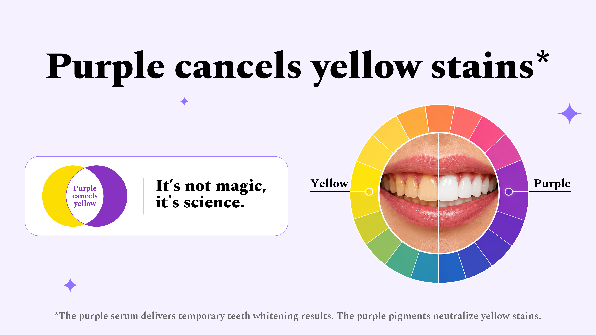
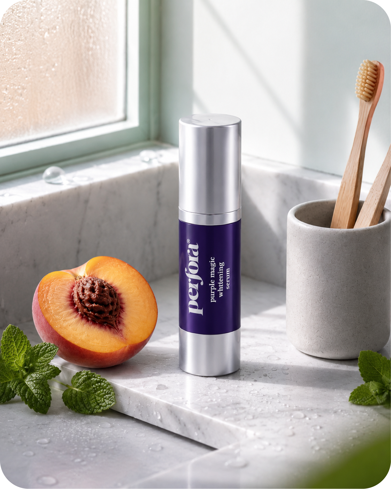

Why teeth can look yellow even when you brush every day
Coffee, tea, lighting, and natural enamel undertones can all make a smile look duller than it really is. Here is why that happens, and why colour-correction has become a popular quick fix before important moments.
Most people assume yellow-looking teeth mean they are doing something wrong. Often, it is just enamel undertone, surface staining, and lighting making teeth look less bright than expected.
The problem usually shows up at the worst time: after coffee, before a meeting, or right when the front camera opens. Sometimes the need is not long-term whitening. It is looking fresher right now.
“It is rarely your entire smile that bothers you. It is usually one yellow-looking moment, under one unforgiving light, right before something important.”
Reader concern this category speaks toYellow-looking teeth are not always a brushing problem
Enamel is slightly translucent, so warmer dentin can show through. Add tea, coffee, smoking, dark sauces, and bright lighting, and teeth can start looking more yellow than expected even with regular brushing.

Not every whitening option solves tonight’s problem
Traditional whitening can help over time, but it does not always solve a last-minute confidence issue. If the event is tonight, gradual improvement is not the same as instant visual correction.

The reason the serum is purple is the reason people understand it so quickly
Purple sits opposite yellow on the colour wheel, so it can visually balance yellow-looking tones. Perfora applies that same tone-correction logic to teeth, framing the serum as a fast appearance-first brightening step.

“Think of it like concealer for a smile: not a forever change, but a fast cosmetic shift in how bright teeth look right now.”
How the product is best understoodMeet the serum designed for the moment your smile needs a fast refresh
Perfora Purple Magic Whitening Serum is positioned as a peroxide-free, enamel-safe formula for daily use. The product page says it can visibly improve the look of teeth from the first use and uses an apple, peach, and mint flavour profile.

Need a quick smile brightener, not a whole treatment plan?
That is the most natural point in the article to recommend Purple Serum.
Try Purple SerumWhat stands out on the product page
The Perfora listing shows 6,094 reviews, with repeated mentions of fast visible improvement, confidence, and ease before important moments.

I have already seen improvements in my teeth. They are looking bright and white.
Review excerpt shown on Perfora product pageIt gives you best result after one use only.
Review excerpt shown on Perfora product pageMy teeth were becoming yellow but slightly changed to white after using purple magic teeth whitening serum for 10 days.
Review excerpt shown on Perfora product pageWhat people usually want to know before trying it
- How fast does it work? The product page says visible results can appear from the first use, in about 60 seconds.
- Is it a replacement for toothpaste? No. Perfora says it should be used in addition to regular brushing, not instead of it.
- Is it harsh? The brand describes it as peroxide free, enamel safe, and free from harmful ingredients.
- How much should be used? The product page recommends two pumps on the toothbrush.
If your issue is “my teeth look yellow right now,” this is the angle that makes sense
Not everyone needs an intense whitening routine. Some people just want a quick appearance boost before a high-visibility moment. That is the clearest case for Purple Magic Whitening Serum.
Want to instantly neutralise yellow tones?
Perfora Purple Magic Whitening Serum is the most natural product recommendation at this point in the article.
Try Purple Serum